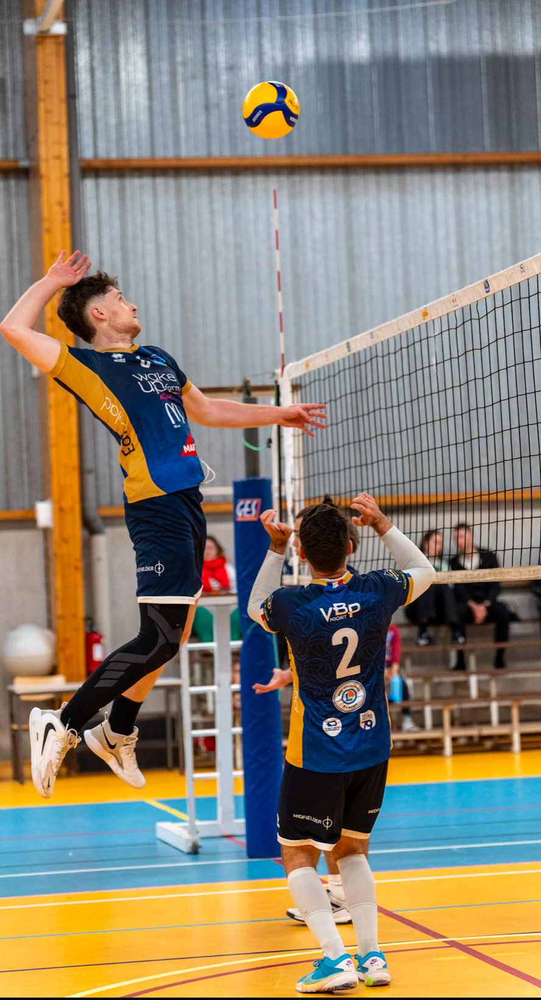
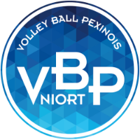
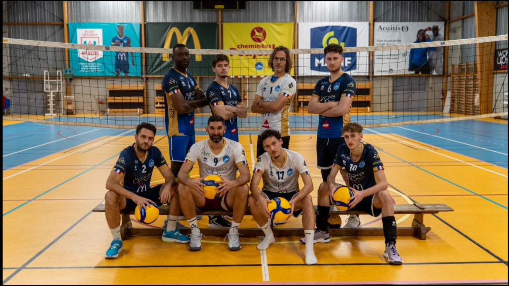
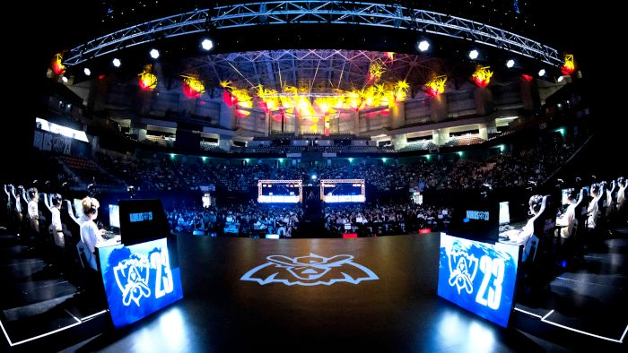

Personnel
Mon parcours, mon caractère, mes passions — ce qui me définit en dehors du bureau.
Qui suis-je ?
Né le 10 avril 2005 à Paris Xème. Grandi à Vendôme jusqu'à 18 ans. Aujourd'hui étudiant à Niort en BUT Science des données, alternant chez Apivia Macif Mutuelle.
Ce portfolio reflète mon parcours jusqu'en juin 2025 — la date à laquelle je l'ai conçu.
Parcours personnel
De mes 2 à 18 ans à Vendôme, collège Robert Lasneau puis lycée Ronsard. Le Covid a bouleversé mon entrée au lycée (rythme hybride). En Première, la physique-chimie m'a coûté du temps et de l'énergie — j'ai décidé de l'abandonner. Bonne décision : en Terminale, les résultats ont décollé.
Bac : 18 en Mathématiques, 15 en Anglais monde contemporain, 17 au Grand oral. 9 vœux Parcoursup acceptés, aucun refus. Le BUT Science des données à Niort, mon premier choix, accepté directement.
Je suis une personne compétitive, qui veut toujours progresser. Cette ambition se retrouve dans le sport, les études et plus récemment le monde professionnel. Dès 16 ans j'ai travaillé — usine, grande surface, travaux divers — pour comprendre la réalité de l'effort. Ces expériences ont forgé ma conviction : pour obtenir ce que l'on veut, il faut s'en donner les moyens.
Dans chaque équipe sportive, j'ai pris le rôle de capitaine. Appartenir à quelque chose et voir les fruits de son investissement collectif — c'est une satisfaction que je retrouve aussi dans mes projets professionnels.

🏐Photo sport
⚽Photo sport
🏆Photo podium
🎮Photo hobby

Sport
4 ans de pratique. Club du VB Pexinois Niort, poste de central, niveau pré-national (renfort équipe départementale). Cette saison : 1ʳᵉ place championnat pré-national play-down, titre de champion départemental avec 100% des matchs débutés.
Objectif à moyen terme : atteindre un niveau semi-professionnel.
11 ans de football, 7 ans de tennis. Capitaine dans chaque discipline. L'engagement dans une équipe — sur et en dehors du terrain — est quelque chose qui me définit depuis l'enfance.
Autres passions
Ancien joueur compétitif. Je suis aujourd'hui les grandes compétitions internationales avec intérêt — un secteur qui s'est professionnalisé et qui me passionne.
Romans, séries, films. Un univers futuriste ou fantaisiste qui nourrit ma curiosité pour l'IA et les technologies de demain.
Une passion qui se prolonge dans mes choix d'études et mes ambitions professionnelles. L'IA est l'un des domaines qui m'attire le plus pour la suite.